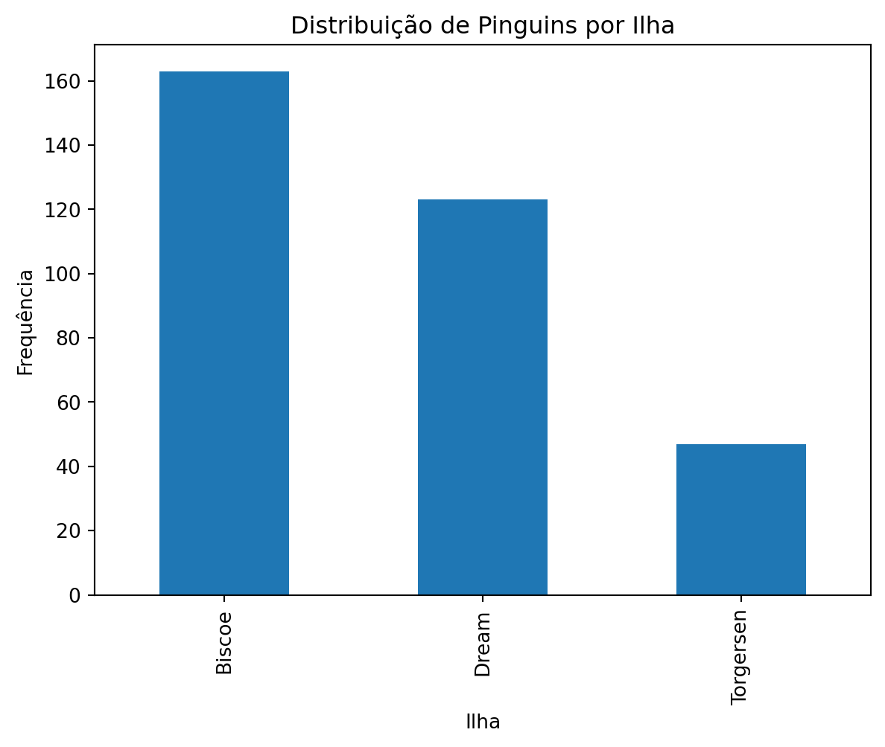
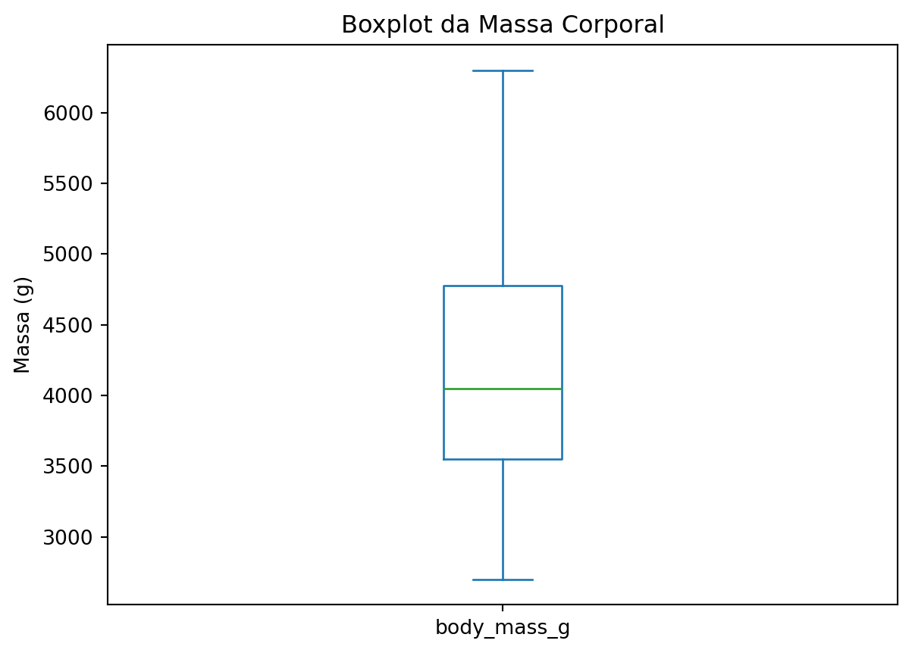
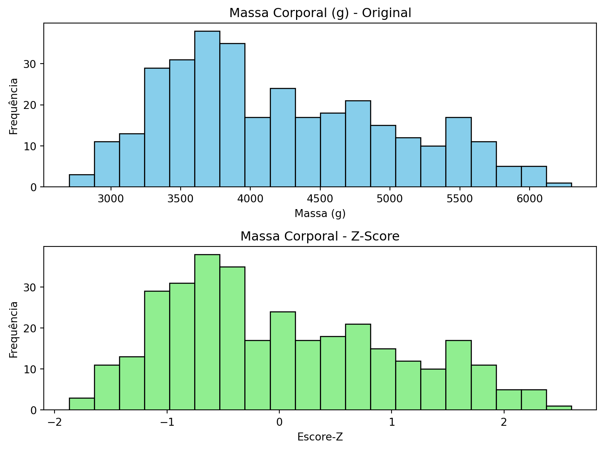

import pandas as pd
import numpy as np
from palmerpenguins import load_penguins
import matplotlib.pyplot as pltEstatística Descritiva e Visualização com Python
Análise descritiva de dados usando Python com Pandas e Matplotlib, incluindo medidas de tendência central, dispersão e visualizações básicas.
Neste tutorial, exploraremos como realizar análise estatística descritiva em Python, utilizando o dataset de [pinguins de Palmer](https://allisonhorst.github.io/palmerpenguins/index.html}{target=“_blank”} para exemplificar conceitos fundamentais de estatística.
DicaCódigo em Python
Acompanha este tutorial o Estatística descritiva em Python
1 Pacotes necessários
2 Carregando e preparando os dados
penguins = load_penguins().dropna() # Remove valores ausentes
penguins.shape # Verificar dimensões(333, 8)3 Variáveis Qualitativas (Categóricas)
3.1 Identificando tipos de dados
penguins.dtypesspecies object
island object
bill_length_mm float64
bill_depth_mm float64
flipper_length_mm float64
body_mass_g float64
sex object
year int64
dtype: object3.2 Frequência absoluta
penguins['species'].value_counts()species
Adelie 146
Gentoo 119
Chinstrap 68
Name: count, dtype: int643.3 Frequência relativa
penguins['species'].value_counts(normalize=True)species
Adelie 0.438438
Gentoo 0.357357
Chinstrap 0.204204
Name: proportion, dtype: float643.4 Visualização: Gráfico de barras
penguins['species'].value_counts().plot(kind='bar')
plt.title("Número de Pinguins por Espécie")
plt.xlabel("Espécie")
plt.ylabel("Frequência")
plt.show()
plt.close('all')
# Para outra variável categórica
penguins['island'].value_counts().plot(kind='bar')
plt.title("Distribuição de Pinguins por Ilha")
plt.xlabel("Ilha")
plt.ylabel("Frequência")
plt.show()
plt.close('all')
4 Variáveis Quantitativas
4.1 Resumo descritivo básico
penguins['body_mass_g'].describe()count 333.000000
mean 4207.057057
std 805.215802
min 2700.000000
25% 3550.000000
50% 4050.000000
75% 4775.000000
max 6300.000000
Name: body_mass_g, dtype: float64# Para todas as variáveis numéricas
penguins.describe()| bill_length_mm | bill_depth_mm | flipper_length_mm | body_mass_g | year | |
|---|---|---|---|---|---|
| count | 333.000000 | 333.000000 | 333.000000 | 333.000000 | 333.000000 |
| mean | 43.992793 | 17.164865 | 200.966967 | 4207.057057 | 2008.042042 |
| std | 5.468668 | 1.969235 | 14.015765 | 805.215802 | 0.812944 |
| min | 32.100000 | 13.100000 | 172.000000 | 2700.000000 | 2007.000000 |
| 25% | 39.500000 | 15.600000 | 190.000000 | 3550.000000 | 2007.000000 |
| 50% | 44.500000 | 17.300000 | 197.000000 | 4050.000000 | 2008.000000 |
| 75% | 48.600000 | 18.700000 | 213.000000 | 4775.000000 | 2009.000000 |
| max | 59.600000 | 21.500000 | 231.000000 | 6300.000000 | 2009.000000 |
4.2 Visualização: Histograma
penguins['body_mass_g'].plot(kind='hist',
bins=5,
edgecolor="white")
plt.title("Histograma da Massa Corporal")
plt.xlabel("Massa (g)")
plt.ylabel("Frequência")
plt.show()
plt.close('all')
Dica
Interpretando histogramas:
- Forma: simétrica, assimétrica à esquerda/direita
- Tendência central: onde se concentram os dados
- Dispersão: quão espalhados estão os valores
5 Quartis e Medidas de Posição
5.1 Quartis individuais
penguins['body_mass_g'].quantile(0.25) # Q1
penguins['body_mass_g'].quantile(0.50) # Q2 (mediana)
penguins['body_mass_g'].quantile(0.75) # Q3np.float64(4775.0)5.2 Múltiplos quantis
penguins['body_mass_g'].quantile([0.25, 0.5, 0.75])0.25 3550.0
0.50 4050.0
0.75 4775.0
Name: body_mass_g, dtype: float645.3 Visualização: Boxplot
penguins['body_mass_g'].plot(kind='box')
plt.title("Boxplot da Massa Corporal")
plt.ylabel("Massa (g)")
plt.show()
plt.close('all')
Nota
Interpretando boxplots:
- Linha central: mediana (Q2)
- Caixa: do Q1 ao Q3 (50% dos dados centrais)
- Whiskers: extensão até ~1.5 × IQR
- Pontos isolados: possíveis outliers
6 Medidas de Tendência Central
penguins['body_mass_g'].mean() # Média aritmética
penguins['body_mass_g'].median() # Mediananp.float64(4050.0)
Dica
Quando usar cada medida:
- Média: dados simétricos, sem outliers extremos
- Mediana: dados assimétricos ou com outliers
7 Medidas de Variação
penguins['body_mass_g'].std() # Desvio padrão
penguins['body_mass_g'].var() # Variâncianp.float64(648372.4876985418)7.1 Cálculo manual da variância
x = penguins['body_mass_g']
# Fórmula: Σ(xi - x̄)² / (n-1)
variancia_manual = np.sum((x - x.mean())**2) / (len(x) - 1)
print(f"Variância manual: {variancia_manual}")
print(f"Variância pandas: {x.var()}")Variância manual: 648372.4876985418
Variância pandas: 648372.48769854188 Escore-Z (Padronização)
A padronização transforma os dados para média = 0 e desvio padrão = 1:
\[Z = \frac{(X - \mu)}{\sigma}\]
media = penguins['body_mass_g'].mean()
desvio_padrao = penguins['body_mass_g'].std()
penguins['zscore_massa'] = (penguins['body_mass_g'] - media) / desvio_padrao8.1 Verificando a padronização
penguins[['body_mass_g', 'zscore_massa']].head()| body_mass_g | zscore_massa | |
|---|---|---|
| 0 | 3750.0 | -0.567621 |
| 1 | 3800.0 | -0.505525 |
| 2 | 3250.0 | -1.188572 |
| 4 | 3450.0 | -0.940192 |
| 5 | 3650.0 | -0.691811 |
penguins[['body_mass_g', 'zscore_massa']].describe()| body_mass_g | zscore_massa | |
|---|---|---|
| count | 333.000000 | 3.330000e+02 |
| mean | 4207.057057 | -8.535048e-17 |
| std | 805.215802 | 1.000000e+00 |
| min | 2700.000000 | -1.871619e+00 |
| 25% | 3550.000000 | -8.160012e-01 |
| 50% | 4050.000000 | -1.950496e-01 |
| 75% | 4775.000000 | 7.053301e-01 |
| max | 6300.000000 | 2.599232e+00 |
Nota
Interpretação do Z-score:
- Z = 0: valor igual à média
- Z = 1: um desvio padrão acima da média
- Z = -1: um desvio padrão abaixo da média
- |Z| > 2: valor considerado incomum
9 Comparação Visual: Original vs Padronizado
fig, axes = plt.subplots(2, 1, figsize=(8, 6))
# Histograma da variável original
axes[0].hist(penguins['body_mass_g'], bins=20, color='skyblue', edgecolor='black')
axes[0].set_title("Massa Corporal (g) - Original")
axes[0].set_xlabel("Massa (g)")
axes[0].set_ylabel("Frequência")
# Histograma da variável padronizada
axes[1].hist(penguins['zscore_massa'], bins=20, color='lightgreen', edgecolor='black')
axes[1].set_title("Massa Corporal - Z-Score")
axes[1].set_xlabel("Escore-Z")
axes[1].set_ylabel("Frequência")
plt.tight_layout()
plt.show()
plt.close('all')
10 Resumo das Medidas
| Medida | Função Python | Interpretação |
|---|---|---|
| Média | .mean() |
Valor central (sensível a outliers) |
| Mediana | .median() |
Valor central (robusta a outliers) |
| Desvio Padrão | .std() |
Dispersão dos dados |
| Variância | .var() |
Dispersão ao quadrado |
| Q1, Q3 | .quantile(0.25), .quantile(0.75) |
Quartis |
| Mínimo/Máximo | .min(), .max() |
Valores extremos |
11 Aplicações Práticas
11.1 Identificando outliers com Z-score
# Valores com |Z| > 2 são considerados incomuns
outliers = penguins[np.abs(penguins['zscore_massa']) > 2]
print(f"Encontrados {len(outliers)} possíveis outliers")
outliers[['species', 'body_mass_g', 'zscore_massa']]Encontrados 9 possíveis outliers| species | body_mass_g | zscore_massa | |
|---|---|---|---|
| 165 | Gentoo | 5850.0 | 2.040376 |
| 167 | Gentoo | 5850.0 | 2.040376 |
| 169 | Gentoo | 6300.0 | 2.599232 |
| 185 | Gentoo | 6050.0 | 2.288757 |
| 229 | Gentoo | 6000.0 | 2.226661 |
| 231 | Gentoo | 5950.0 | 2.164566 |
| 263 | Gentoo | 5950.0 | 2.164566 |
| 267 | Gentoo | 5850.0 | 2.040376 |
| 269 | Gentoo | 6000.0 | 2.226661 |
11.2 Comparação rápida entre variáveis
# Estatísticas descritivas para múltiplas variáveis
colunas_numericas = ['bill_length_mm', 'bill_depth_mm', 'flipper_length_mm', 'body_mass_g']
penguins[colunas_numericas].describe()| bill_length_mm | bill_depth_mm | flipper_length_mm | body_mass_g | |
|---|---|---|---|---|
| count | 333.000000 | 333.000000 | 333.000000 | 333.000000 |
| mean | 43.992793 | 17.164865 | 200.966967 | 4207.057057 |
| std | 5.468668 | 1.969235 | 14.015765 | 805.215802 |
| min | 32.100000 | 13.100000 | 172.000000 | 2700.000000 |
| 25% | 39.500000 | 15.600000 | 190.000000 | 3550.000000 |
| 50% | 44.500000 | 17.300000 | 197.000000 | 4050.000000 |
| 75% | 48.600000 | 18.700000 | 213.000000 | 4775.000000 |
| max | 59.600000 | 21.500000 | 231.000000 | 6300.000000 |